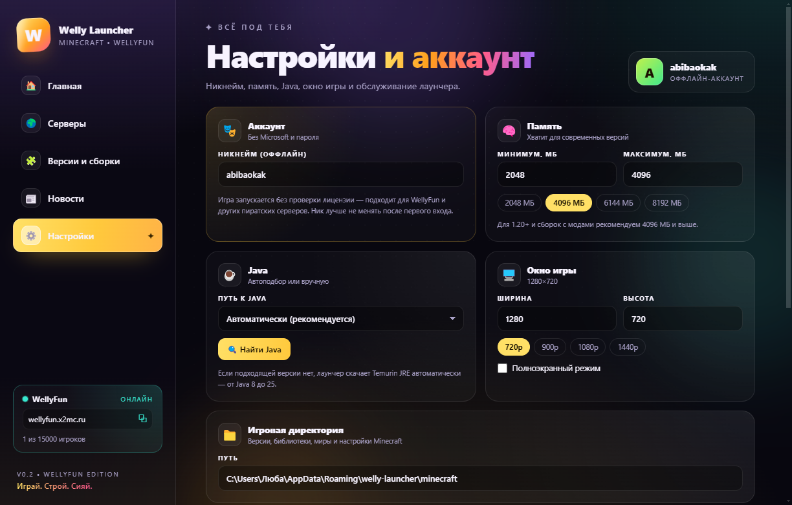
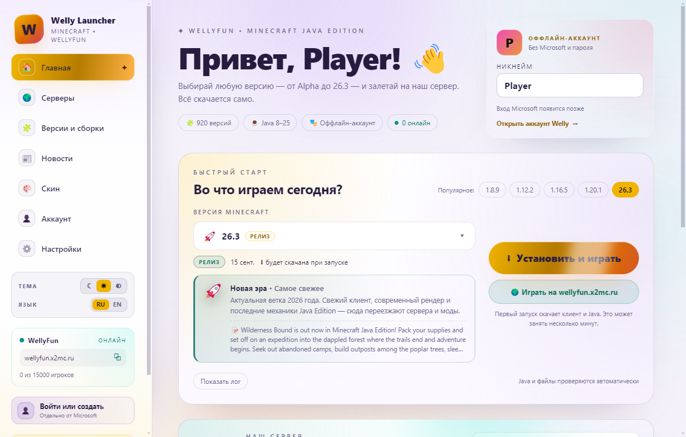
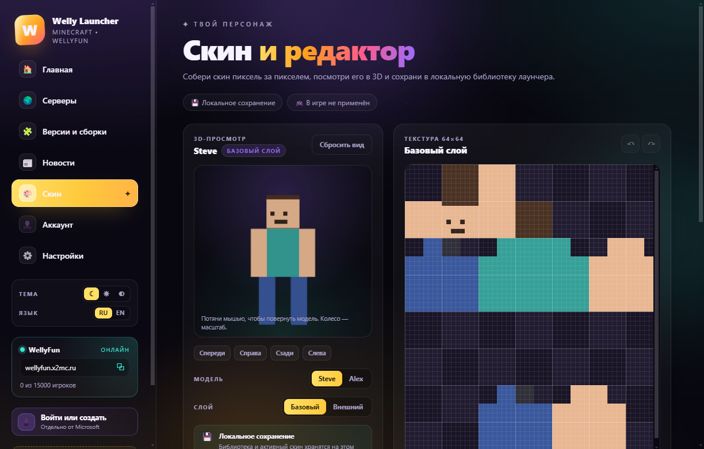
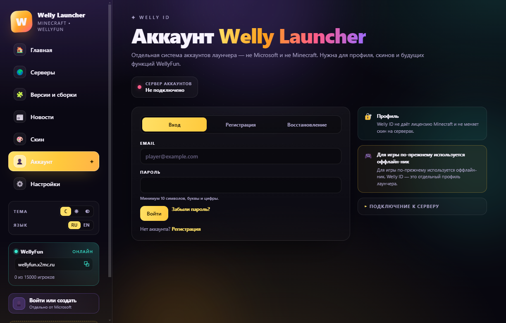

920 версий
От Alpha до 26.3. Выбирай любую — лаунчер сам скачает клиент, библиотеки и ассеты.
Всё уже внутри
Один лаунчер вместо десяти программ, инструкций и поисков нужной Java. Три темы, два языка, скины в 3D и аккаунт Welly ID — рядом с кнопкой «Играть».
От Alpha до 26.3. Выбирай любую — лаунчер сам скачает клиент, библиотеки и ассеты.
Подходящая Java 8–25 находится и скачивается автоматически. Никаких настроек.
Отдельный аккаунт лаунчера, не Microsoft. Пароль хранится только в виде Argon2id-хеша.
Редактор 64×64 со слоями Steve и Alex, импортом и экспортом PNG и библиотекой скинов.
Тёмная, светлая или системная тема. Русский и английский переключаются без перезапуска.
Fabric, Quilt, Forge, NeoForge и OptiFine — версия Minecraft и загрузчик в один клик. Каждая сборка запускается отдельно.
Перед запуском Minecraft лаунчер сворачивается и сам возвращается, когда игра закрывается.
«Играть на сервере» запускает Minecraft, подключает к wellyfun.x2mc.ru и убирает лаунчер с экрана.
Онлайн сервера, свежие новости и описания версий прямо на главной лаунчера.
Ставится в Program Files, ярлыки на рабочем столе и в меню «Пуск». Есть и portable-версия.
Оффлайн-профиль: ввёл ник — и играешь. Пароль от Microsoft не нужен.
Версия 0.6
Fabric, Quilt, Forge, NeoForge и OptiFine в один клик — плюс лаунчер, который больше не мешает игре.
 Загрузчики
Загрузчики
Выбери версию Minecraft — в панели появятся кнопки Fabric, Quilt, Forge, NeoForge и OptiFine с рекомендуемой и другими сборками.

ПоведениеПри запуске Minecraft окно сворачивается в панель задач и возвращается, когда игра закрывается.

ТемыТема применяется сразу и запоминается между запусками — без вспышки белого экрана при старте.

СкиныРисуй прямо в лаунчере: базовый и внешний слой, модели Steve и Alex, сетка, пипетка и масштаб.

АккаунтОтдельный аккаунт лаунчера: регистрация по почте, подтверждение, восстановление пароля и профиль.
Дальше
WellyFun ждёт
Скачай лаунчер, придумай ник и окажись в игре через пару минут.